class ListNode:
def __init__(self, x):
self.val = x
self.next = None
self.prev = None
def __str__(self):
if not self.next: return str(self.val)
else: return str(self.val) + " " + str(self.next)
def __repr__(self):
return self.__str__()
def __eq__(self,other):
return self.__str__() == other.__str__()
def addTwoNumbers(l1, l2, previous_carry = 0):
p1 = l1 # watchvar ref:l1:btree p1
p2 = l2 # watchvar ref:l2:btree p2
carry = 0 # watchvar carry
head = ListNode(-1) # watchvar btree:prev:next:val head
tail = head # watchvar ref:head:btree tail
while p1 or p2 or carry:
v1 = p1.val if p1 else 0 # watchvar v1
v2 = p2.val if p2 else 0 # watchvar v2
n = v1 + v2 + carry
carry = n // 10
n = n % 10
node = ListNode(n)
if tail:
tail.next = node
tail = node
else:
head = node
tail = node
p1 = p1.next if p1 else None
p2 = p2.next if p2 else None
return head.next
def go():
# https://leetcode.com/problems/add-two-numbers/
a = ListNode(10) # watchvar btree:prev:next:val a
b= ListNode(22) # watchvar a
c = ListNode(30) # watchvar btree:prev:next:val c
d = ListNode(43) # watchvar c
a.next = b
c.next = d
addTwoNumbers(a,c)
Step:1,Line:40
Code executed:def go():
No Variable change detected in those marked for tracing
Step:2,Line:42
Code executed: a = ListNode(10) # watchvar btree:prev:next:val a
No Variable change detected in those marked for tracing
Step:3,Line:3
Code executed: def __init__(self, x):
No Variable change detected in those marked for tracing
Step:4,Line:4
Code executed: self.val = x
No Variable change detected in those marked for tracing
Step:5,Line:5
Code executed: self.next = None
No Variable change detected in those marked for tracing
Step:6,Line:6
Code executed: self.prev = None
No Variable change detected in those marked for tracing
Step:7,Line:6
Code executed: self.prev = None
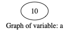
No Variable change detected in those marked for tracing
Step:8,Line:43
Code executed: b= ListNode(22) # watchvar a
No Variable change detected in those marked for tracing
Step:9,Line:3
Code executed: def __init__(self, x):
No Variable change detected in those marked for tracing
Step:10,Line:4
Code executed: self.val = x
No Variable change detected in those marked for tracing
Step:11,Line:5
Code executed: self.next = None
No Variable change detected in those marked for tracing
Step:12,Line:6
Code executed: self.prev = None
No Variable change detected in those marked for tracing
Step:13,Line:6
Code executed: self.prev = None
No Variable change detected in those marked for tracing
Step:14,Line:44
Code executed: c = ListNode(30) # watchvar btree:prev:next:val c
No Variable change detected in those marked for tracing
Step:15,Line:3
Code executed: def __init__(self, x):
No Variable change detected in those marked for tracing
Step:16,Line:4
Code executed: self.val = x
No Variable change detected in those marked for tracing
Step:17,Line:5
Code executed: self.next = None
No Variable change detected in those marked for tracing
Step:18,Line:6
Code executed: self.prev = None
No Variable change detected in those marked for tracing
Step:19,Line:6
Code executed: self.prev = None


No Variable change detected in those marked for tracing
Step:20,Line:45
Code executed: d = ListNode(43) # watchvar c
No Variable change detected in those marked for tracing
Step:21,Line:3
Code executed: def __init__(self, x):
No Variable change detected in those marked for tracing
Step:22,Line:4
Code executed: self.val = x
No Variable change detected in those marked for tracing
Step:23,Line:5
Code executed: self.next = None
No Variable change detected in those marked for tracing
Step:24,Line:6
Code executed: self.prev = None
No Variable change detected in those marked for tracing
Step:25,Line:6
Code executed: self.prev = None

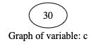
No Variable change detected in those marked for tracing
Step:26,Line:46
Code executed: a.next = b

Variable a changed from 10 to 10 22
Step:27,Line:47
Code executed: c.next = d
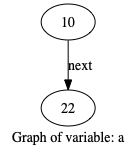
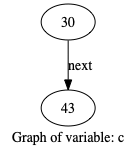
Variable c changed from 30 to 30 43
Step:28,Line:48
Code executed: addTwoNumbers(a,c)


No Variable change detected in those marked for tracing
Step:29,Line:14
Code executed:def addTwoNumbers(l1, l2, previous_carry = 0):

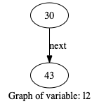
No Variable change detected in those marked for tracing
Step:30,Line:15
Code executed: p1 = l1 # watchvar ref:l1:btree p1


No Variable change detected in those marked for tracing
Step:31,Line:16
Code executed: p2 = l2 # watchvar ref:l2:btree p2

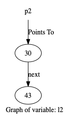
No Variable change detected in those marked for tracing
Step:32,Line:17
Code executed: carry = 0 # watchvar carry


No Variable change detected in those marked for tracing
Step:33,Line:18
Code executed: head = ListNode(-1) # watchvar btree:prev:next:val head
No Variable change detected in those marked for tracing
Step:34,Line:3
Code executed: def __init__(self, x):
No Variable change detected in those marked for tracing
Step:35,Line:4
Code executed: self.val = x
No Variable change detected in those marked for tracing
Step:36,Line:5
Code executed: self.next = None
No Variable change detected in those marked for tracing
Step:37,Line:6
Code executed: self.prev = None
No Variable change detected in those marked for tracing
Step:38,Line:6
Code executed: self.prev = None


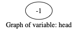
No Variable change detected in those marked for tracing
Step:39,Line:19
Code executed: tail = head # watchvar ref:head:btree tail


No Variable change detected in those marked for tracing
Step:40,Line:20
Code executed: while p1 or p2 or carry:


No Variable change detected in those marked for tracing
Step:41,Line:21
Code executed: v1 = p1.val if p1 else 0 # watchvar v1


No Variable change detected in those marked for tracing
Step:42,Line:22
Code executed: v2 = p2.val if p2 else 0 # watchvar v2


No Variable change detected in those marked for tracing
Step:43,Line:23
Code executed: n = v1 + v2 + carry
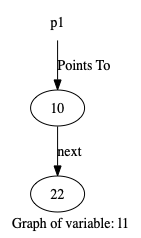

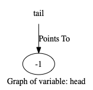
No Variable change detected in those marked for tracing
Step:44,Line:24
Code executed: carry = n // 10


Variable carry changed from 0 to 4
Step:45,Line:25
Code executed: n = n % 10


No Variable change detected in those marked for tracing
Step:46,Line:26
Code executed: node = ListNode(n)
No Variable change detected in those marked for tracing
Step:47,Line:3
Code executed: def __init__(self, x):
No Variable change detected in those marked for tracing
Step:48,Line:4
Code executed: self.val = x
No Variable change detected in those marked for tracing
Step:49,Line:5
Code executed: self.next = None
No Variable change detected in those marked for tracing
Step:50,Line:6
Code executed: self.prev = None
No Variable change detected in those marked for tracing
Step:51,Line:6
Code executed: self.prev = None


No Variable change detected in those marked for tracing
Step:52,Line:27
Code executed: if tail:


No Variable change detected in those marked for tracing
Step:53,Line:28
Code executed: tail.next = node


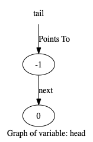
Variable tail changed from -1 to -1 0
Step:54,Line:29
Code executed: tail = node


Variable tail changed from -1 0 to 0
Step:55,Line:33
Code executed: p1 = p1.next if p1 else None


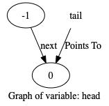
Variable p1 changed from 10 22 to 22
Step:56,Line:34
Code executed: p2 = p2.next if p2 else None


Variable p2 changed from 30 43 to 43
Step:57,Line:20
Code executed: while p1 or p2 or carry:


No Variable change detected in those marked for tracing
Step:58,Line:21
Code executed: v1 = p1.val if p1 else 0 # watchvar v1

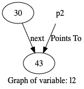

Variable v1 changed from 10 to 22
Step:59,Line:22
Code executed: v2 = p2.val if p2 else 0 # watchvar v2


Variable v2 changed from 30 to 43
Step:60,Line:23
Code executed: n = v1 + v2 + carry


No Variable change detected in those marked for tracing
Step:61,Line:24
Code executed: carry = n // 10


Variable carry changed from 4 to 6
Step:62,Line:25
Code executed: n = n % 10


No Variable change detected in those marked for tracing
Step:63,Line:26
Code executed: node = ListNode(n)
No Variable change detected in those marked for tracing
Step:64,Line:3
Code executed: def __init__(self, x):
No Variable change detected in those marked for tracing
Step:65,Line:4
Code executed: self.val = x
No Variable change detected in those marked for tracing
Step:66,Line:5
Code executed: self.next = None
No Variable change detected in those marked for tracing
Step:67,Line:6
Code executed: self.prev = None
No Variable change detected in those marked for tracing
Step:68,Line:6
Code executed: self.prev = None
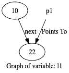


No Variable change detected in those marked for tracing
Step:69,Line:27
Code executed: if tail:


No Variable change detected in those marked for tracing
Step:70,Line:28
Code executed: tail.next = node


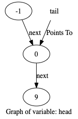
Variable tail changed from 0 to 0 9
Step:71,Line:29
Code executed: tail = node

Variable tail changed from 0 9 to 9
Step:72,Line:33
Code executed: p1 = p1.next if p1 else None


Variable p1 changed from 22 to None
Step:73,Line:34
Code executed: p2 = p2.next if p2 else None


Variable p2 changed from 43 to None
Step:74,Line:20
Code executed: while p1 or p2 or carry:


No Variable change detected in those marked for tracing
Step:75,Line:21
Code executed: v1 = p1.val if p1 else 0 # watchvar v1


Variable v1 changed from 22 to 0
Variable v1 changed from 22 to 0
Step:76,Line:22
Code executed: v2 = p2.val if p2 else 0 # watchvar v2


Variable v2 changed from 43 to 0
Variable v2 changed from 43 to 0
Step:77,Line:23
Code executed: n = v1 + v2 + carry


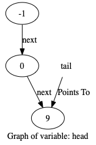
No Variable change detected in those marked for tracing
Step:78,Line:24
Code executed: carry = n // 10


Variable carry changed from 6 to 0
Step:79,Line:25
Code executed: n = n % 10


No Variable change detected in those marked for tracing
Step:80,Line:26
Code executed: node = ListNode(n)
No Variable change detected in those marked for tracing
Step:81,Line:3
Code executed: def __init__(self, x):
No Variable change detected in those marked for tracing
Step:82,Line:4
Code executed: self.val = x
No Variable change detected in those marked for tracing
Step:83,Line:5
Code executed: self.next = None
No Variable change detected in those marked for tracing
Step:84,Line:6
Code executed: self.prev = None
No Variable change detected in those marked for tracing
Step:85,Line:6
Code executed: self.prev = None


No Variable change detected in those marked for tracing
Step:86,Line:27
Code executed: if tail:


No Variable change detected in those marked for tracing
Step:87,Line:28
Code executed: tail.next = node


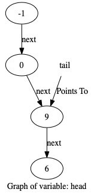
Variable tail changed from 9 to 9 6
Step:88,Line:29
Code executed: tail = node


Variable tail changed from 9 6 to 6
Step:89,Line:33
Code executed: p1 = p1.next if p1 else None


No Variable change detected in those marked for tracing
Step:90,Line:34
Code executed: p2 = p2.next if p2 else None


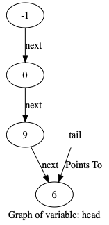
No Variable change detected in those marked for tracing
Step:91,Line:20
Code executed: while p1 or p2 or carry:


No Variable change detected in those marked for tracing
Step:92,Line:35
Code executed: return head.next


No Variable change detected in those marked for tracing
Step:93,Line:35
Code executed: return head.next
No Variable change detected in those marked for tracing